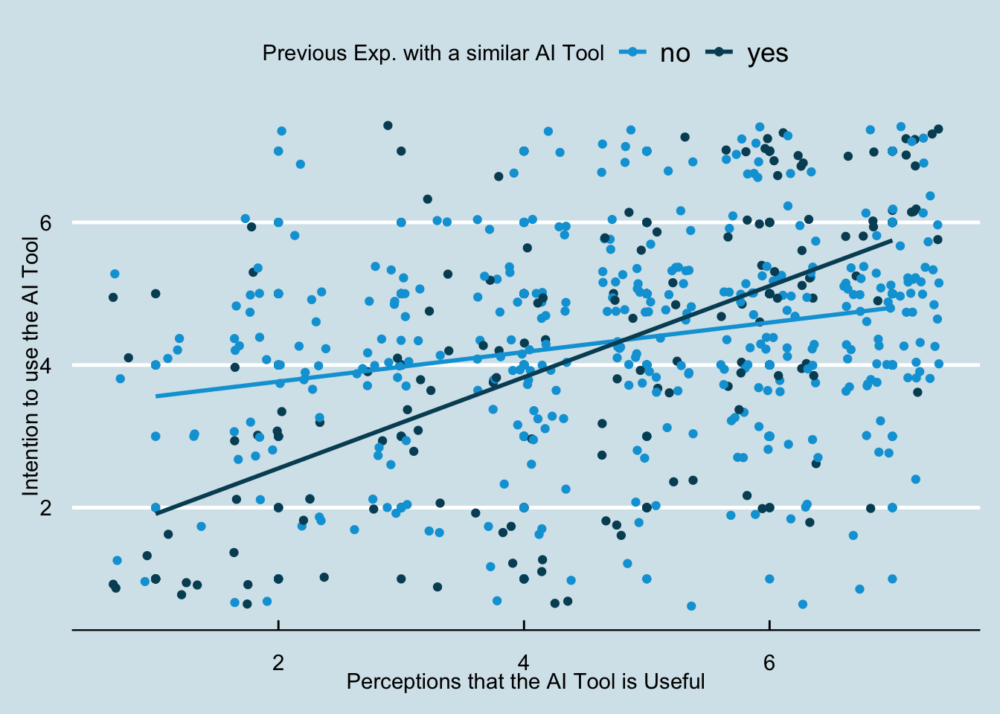

library(tidyverse)
library(boot)
library(ggthemes)
data_ai <- readr::read_csv("https://alopilato88.github.io/quantitative-analysis-1/assignments/03-assignment-data.csv")Assignment 3
Setup
Load the required packages and read in the dataset below.
Question 1
Q1: Create a table that shows what proportion of employees belong to a given a region. Which region do most employees work?
table(data_ai$office_region) |>
prop.table() |>
round(3)
asia europe north america
0.082 0.178 0.740 Most employees work in North America.
Question 2
Q2: Estimate a regression model that uses office_region to predict perceived_freq_use. Name this model mod_freq_use_1
mod_freq_use_1 <- lm(perceived_freq_use ~ office_region, data = data_ai)Question 3
Q3: Does an individual’s perceived_freq_use differ by office_region? Provide a brief explanation.
summary(mod_freq_use_1)
Call:
lm(formula = perceived_freq_use ~ office_region, data = data_ai)
Residuals:
Min 1Q Median 3Q Max
-3.3865 -0.3865 -0.2195 0.7416 1.7805
Coefficients:
Estimate Std. Error t value Pr(>|t|)
(Intercept) 4.21951 0.19837 21.271 <2e-16 ***
office_regioneurope 0.03891 0.23974 0.162 0.871
office_regionnorth america 0.16697 0.20907 0.799 0.425
---
Signif. codes: 0 '***' 0.001 '**' 0.01 '*' 0.05 '.' 0.1 ' ' 1
Residual standard error: 1.27 on 497 degrees of freedom
Multiple R-squared: 0.00241, Adjusted R-squared: -0.001604
F-statistic: 0.6003 on 2 and 497 DF, p-value: 0.549No, perceived_freq_use does not differ by office_region because neither the regression slope comparing Europe to Asia nor the regression slope comparing North America to Asia are significantly different than zero. Further, the R2 value is very small and non-significant.
Question 4
Q4: Using mutate, transform the office_region variable into a factor and make the reference group equal to north america. Name this new variable: office_region_factor.
data_ai <-
data_ai |>
dplyr::mutate(
office_region_factor = as.factor(office_region),
office_region_factor = relevel(office_region_factor, ref = "north america")
)Question 5
Q5: Estimate a regression model that uses office_region_factor to predict perceived_freq_use. Name this model: mod_freq_use_2.
mod_freq_use_2 <- lm(perceived_freq_use ~ office_region_factor, data = data_ai)Question 6
Q6: Why do the regression coefficients in mod_freq_use_1 differ from the coefficients in mod_freq_use_2?
summary(mod_freq_use_2)
Call:
lm(formula = perceived_freq_use ~ office_region_factor, data = data_ai)
Residuals:
Min 1Q Median 3Q Max
-3.3865 -0.3865 -0.2195 0.7416 1.7805
Coefficients:
Estimate Std. Error t value Pr(>|t|)
(Intercept) 4.38649 0.06603 66.429 <2e-16 ***
office_region_factorasia -0.16697 0.20907 -0.799 0.425
office_region_factoreurope -0.12806 0.14996 -0.854 0.394
---
Signif. codes: 0 '***' 0.001 '**' 0.01 '*' 0.05 '.' 0.1 ' ' 1
Residual standard error: 1.27 on 497 degrees of freedom
Multiple R-squared: 0.00241, Adjusted R-squared: -0.001604
F-statistic: 0.6003 on 2 and 497 DF, p-value: 0.549In mod_freq_use_1, the reference group for office_region is Asia, so the intercept estimates average perceived_freq_use for employees based in Asia and each subsequent regression slope is a mean comparison of the remaining region averages to the Asia average. Whereas in mod_freq_use_2 the reference group is North America, so the intercept now estimates the average perceived_freq_use for employees based in North America and the slopes are mean comparisons of the remaining region averages to North America.
Question 7
Q7: Estimate a regression model that tests if previous_exp moderates the relationship between perceived_useful and behavioral_intention. In this model, perceived_useful is the focal predictor and previous_exp is the moderator. Name the model mod_beh_intent_1.
mod_beh_intent_1 <- lm(behavioral_intention ~ perceived_useful * previous_exp, data = data_ai)Question 8
Q8: Does previous_exp moderate the relationship between perceived_useful and behavioral_intention? Why or why not?
summary(mod_beh_intent_1)
Call:
lm(formula = behavioral_intention ~ perceived_useful * previous_exp,
data = data_ai)
Residuals:
Min 1Q Median 3Q Max
-3.8033 -0.8033 0.1967 0.8180 3.8098
Coefficients:
Estimate Std. Error t value Pr(>|t|)
(Intercept) 3.35358 0.22020 15.230 < 2e-16 ***
perceived_useful 0.20710 0.04302 4.814 1.97e-06 ***
previous_expyes -2.08131 0.39227 -5.306 1.69e-07 ***
perceived_useful:previous_expyes 0.43220 0.07842 5.512 5.73e-08 ***
---
Signif. codes: 0 '***' 0.001 '**' 0.01 '*' 0.05 '.' 0.1 ' ' 1
Residual standard error: 1.408 on 496 degrees of freedom
Multiple R-squared: 0.1937, Adjusted R-squared: 0.1889
F-statistic: 39.73 on 3 and 496 DF, p-value: < 2.2e-16Yes, previous_exp moderates the relationship between perceived_useful and behavioral_intention because the estimate of the interaction effect (perceived_useful:previous_expyes) is significantly different than zero.
Question 9
Q9: Interpret the interaction you estimated in mod_beh_intent_1. Feel free to use a plot using ggplot2 to aid in your interpretation.
ggplot2::ggplot(
data_ai,
ggplot2::aes(
x = perceived_useful,
y = behavioral_intention,
color = previous_exp
)
) +
ggplot2::geom_point() +
ggplot2::geom_jitter() +
ggplot2::geom_smooth(
method = "lm",
formula = y ~ x,
se = FALSE
) +
ggthemes::scale_color_economist() +
ggthemes::theme_economist() +
ggplot2::labs(
x = "Perceptions that the AI Tool is Useful",
y = "Intention to use the AI Tool",
color = "Previous Exp. with a similar AI Tool"
)
From the plot above, we can see that the relationship between perceived_useful and behavioral_intention is stronger for the group of employees who have had previous experience with a similar AI tool (previous_exp == yes).
We can also infer this form the estimate of the interaction, which tells us how much and in which direction the effect of perceived_useful changes for employees in the reference group (previous_exp == yes). In this case, the interaction estimate is 0.432, which tells us that the effect of perceived_useful changes from 0.207 for employees with no previous experience to 0.639 for employees with previous experience.
Question 10
Q10: Is the conditional relationship between perceived_useful and behavioral_intention for employees in the prev_exp == yes group? What about for the prev_exp == no group? Explain.
For the group with no previous experience, we can use the slope of perceived_useful in our model where the previous_exp reference group is the “no” group to determine if the conditional effect of perceived_useful for the no group is significant.
summary(mod_beh_intent_1)
Call:
lm(formula = behavioral_intention ~ perceived_useful * previous_exp,
data = data_ai)
Residuals:
Min 1Q Median 3Q Max
-3.8033 -0.8033 0.1967 0.8180 3.8098
Coefficients:
Estimate Std. Error t value Pr(>|t|)
(Intercept) 3.35358 0.22020 15.230 < 2e-16 ***
perceived_useful 0.20710 0.04302 4.814 1.97e-06 ***
previous_expyes -2.08131 0.39227 -5.306 1.69e-07 ***
perceived_useful:previous_expyes 0.43220 0.07842 5.512 5.73e-08 ***
---
Signif. codes: 0 '***' 0.001 '**' 0.01 '*' 0.05 '.' 0.1 ' ' 1
Residual standard error: 1.408 on 496 degrees of freedom
Multiple R-squared: 0.1937, Adjusted R-squared: 0.1889
F-statistic: 39.73 on 3 and 496 DF, p-value: < 2.2e-16Because the slope of perceived_useful is significant, we can conclude that the conditional relationship between perceived_useful and behavioral_intention for employees without previous experience is significant and positive.
Similarly, we can change the reference group to “yes” and refit our model to estimate the conditional relationship of employees with previous experience.
data_ai <-
data_ai |>
dplyr::mutate(
previous_exp_new = as.factor(previous_exp),
previous_exp_new = relevel(previous_exp_new, ref = "yes")
)
mod_beh_intent_2 <- lm(behavioral_intention ~ perceived_useful * previous_exp_new, data = data_ai)
summary(mod_beh_intent_2)
Call:
lm(formula = behavioral_intention ~ perceived_useful * previous_exp_new,
data = data_ai)
Residuals:
Min 1Q Median 3Q Max
-3.8033 -0.8033 0.1967 0.8180 3.8098
Coefficients:
Estimate Std. Error t value Pr(>|t|)
(Intercept) 1.27227 0.32464 3.919 0.000101 ***
perceived_useful 0.63930 0.06556 9.751 < 2e-16 ***
previous_exp_newno 2.08131 0.39227 5.306 1.69e-07 ***
perceived_useful:previous_exp_newno -0.43220 0.07842 -5.512 5.73e-08 ***
---
Signif. codes: 0 '***' 0.001 '**' 0.01 '*' 0.05 '.' 0.1 ' ' 1
Residual standard error: 1.408 on 496 degrees of freedom
Multiple R-squared: 0.1937, Adjusted R-squared: 0.1889
F-statistic: 39.73 on 3 and 496 DF, p-value: < 2.2e-16Because the slope of perceived_useful is significant, we can conclude that the conditional relationship between perceived_useful and behavioral_intention for employees with previous experience is significant and positive. Further, the significant and negative interaction term tells us that the slope for employees with previous experience is stronger than the slope for those without experience.
Question 11
Q11: Estimate several regression models that you can use to determine if perceived_useful indirectly affects perceived_freq_use through behavioral_intention. Name the model with behavioral_intention as the outcome: mod_ie and name the model with perceived_freq_use as the outcome: mod_de.
mod_ie <- lm(behavioral_intention ~ perceived_useful, data = data_ai)
mod_de <- lm(perceived_freq_use ~ behavioral_intention + perceived_useful, data = data_ai)Question 12
Q12: In the models you fit in Question 11, which variable is the antecedent variable, which variable is the mediator, and which variable is the outcome?
- Antecedent variable:
perceived_useful - Mediator:
behavioral_intention - Outcome:
perceived_freq_use
Question 13
Q13: What the direct effect of perceived_useful on behavioral_intention? What is the indirect effect of perceived_useful on behavioral_intention? Calculate the total effect using the indirect effect and direct effect, then compare it to the estimated total effect.
# Direct Effect:
de <- mod_de$coefficients["perceived_useful"]
# Indirect Effect
ie <- mod_de$coefficients["behavioral_intention"] * mod_ie$coefficients["perceived_useful"]
# Total Effect
te <- de + ie
# Estimate total effect
mod_te <- lm(perceived_freq_use ~ perceived_useful, data = data_ai)The effects are:
- Direct Effect: -0.046
- Indirect Effect: 0.161
- Total Effect Calculated: 0.114
- Total Effect Estimated: 0.114
Bonus Question
Use the bootstrap method to determine if the indirect effect is significant. Use 500 bootstrap samples. Use set.seed(8547), so that I can reproduce your results.
calc_ie <- function(data, indices, formula_de, formula_m,
x_name, m_name) {
d <- data[indices, ]
mod_de <- lm(formula_de, data = d)
mod_m <- lm(formula_m, data = d)
ie <- mod_de$coef[m_name] * mod_m$coef[x_name]
return(ie)
}
set.seed(8547)
ie_boot <- boot::boot(
data = data_ai,
statistic = calc_ie,
R = 500,
formula_m = behavioral_intention ~ perceived_useful,
formula_de = perceived_freq_use ~ behavioral_intention + perceived_useful,
x_name = "perceived_useful",
m_name = "behavioral_intention"
)
boot::boot.ci(ie_boot, conf = .95, type = "perc")BOOTSTRAP CONFIDENCE INTERVAL CALCULATIONS
Based on 500 bootstrap replicates
CALL :
boot::boot.ci(boot.out = ie_boot, conf = 0.95, type = "perc")
Intervals :
Level Percentile
95% ( 0.1208, 0.2004 )
Calculations and Intervals on Original ScaleYes, the indirect effect is significant because 0 is not contained in its 95% bootstrap confidence interval.